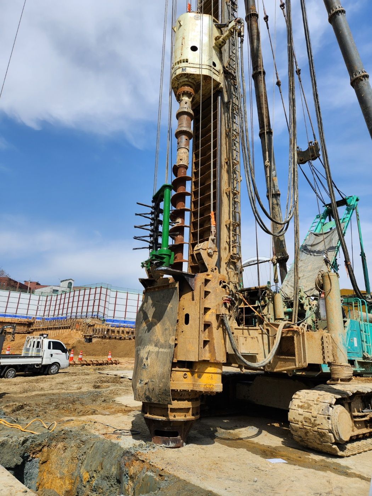
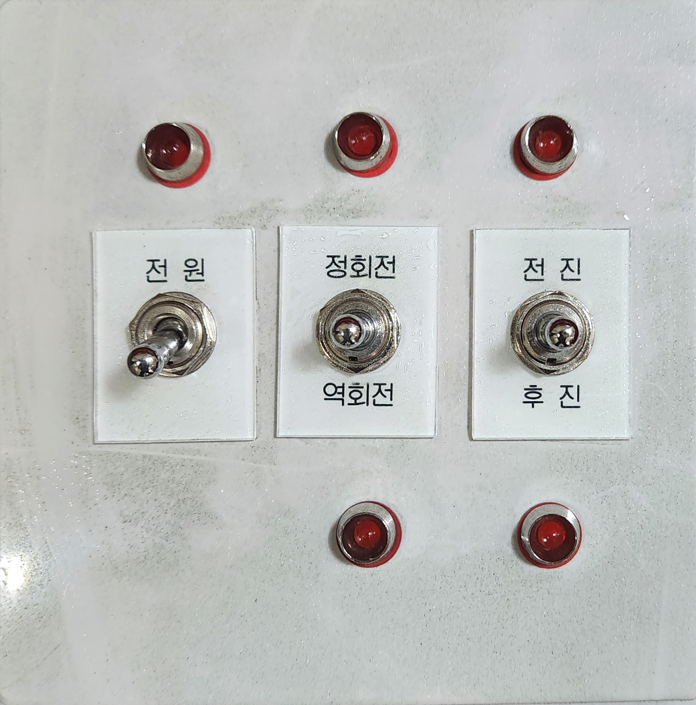
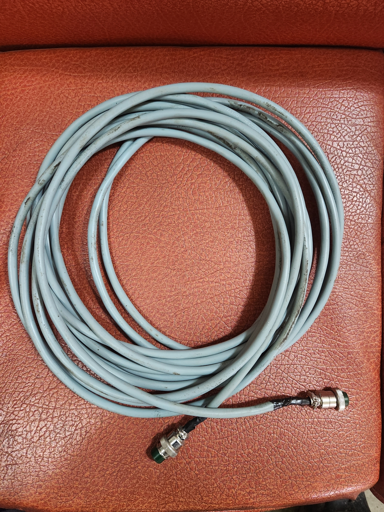
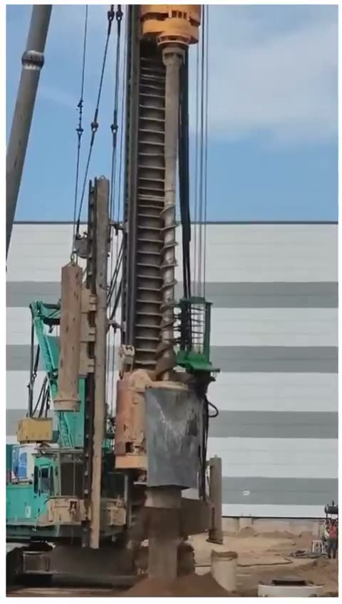
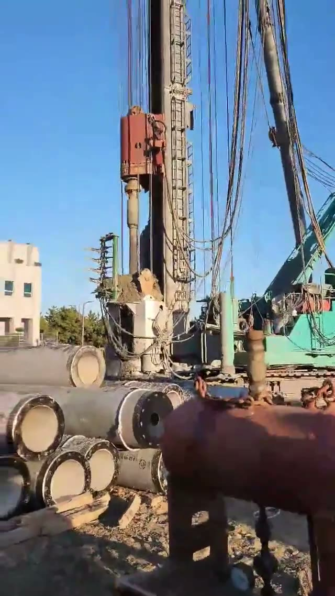

오거 스크류용 부상토 제거장치
특허 제10-2245741호 · 제10-2538953호 · 디자인등록 제30-1154954호 — 항타기 현장의 낙하물 안전사고를 근본적으로 예방하는 국내 유일의 안전장치입니다.
부상토, 왜 위험한가요?

오거 하부에서 부상토가 제거되지 않은 채 수십 미터 상부까지 올라간 공사현장입니다. 항타기의 천공스크류에 얽혀 상부로 올라간 1~30kg의 부상토가 10~35m 높이에서 낙하할 경우, 하부에서 작업하는 작업자에게 치명적인 안전사고를 유발할 수 있습니다.
시간이 경과하여 돌처럼 굳어진 상태에서 낙하할 경우, 사망사고로 이어질 수 있습니다.
부상토 낙하로 실제 발생하는 안전사고 유형
부상토 제거장치 미설치 현장에서 반복적으로 보고되는 사고 유형입니다.
비트·스크류 교체 중 사고
부상토 낙하로 인해 비트·스크류 교체 중인 작업자를 강타하여 중대한 안전사고를 유발합니다.
도마리(리바운드) 체크 중 사고
도마리체크(리바운드체크) 중이던 파일 작업자가, 낙하하는 부상토에 두부를 맞아 중경상을 입은 사고입니다.
파일 센터 확인 중 사고
파일 센터를 확인 중이던 작업자가 낙하하는 부상토에 맞아 사망한 안전사고입니다.
케이싱 용접 중 사고
케이싱 용접 중이던 용접공이 낙하하는 부상토에 맞아 현장에서 사망한 안전사고입니다.
태경산업의 해결 방식
하부오거에 탈부착하는 독립형 제거장치로, 지면에서부터 부상토를 안전하게 제거합니다.
저희 제거장치는 하부오거에 탈부착하여 지면에서부터 부상토를 제거함으로써, 하부오거는 바닥에 있는 상태에서 상부오거를 회전·상승시켜 부상토를 제거합니다. 스크류에 붙은 부상토를 제거해 상부오거의 부하 상태를 최소화하고, 부상토 무게에 의한 쏠림 현상도 개선됩니다.
타사 제품과 달리 항타기 본체의 유압을 사용하지 않고 개별 파워팩을 장착해, 보다 강력한 힘과 손쉬운 관리가 가능하도록 설계했습니다.

제거장치 장착부산업안전보건관리비로 사용 가능 — 건설업 산업안전보건관리비 계상 및 사용기준(고용노동부고시 제2020-61호) 제7조와 산업안전보건기준에 관한 규칙 제14조에 따른 조치가 모두 이행된 경우, 본 제품(부상토제거장치)을 산업안전보건관리비로 사용할 수 있습니다.
※ 계상·사용 가능 여부는 현장 조건 및 발주처·감리 확인에 따라 달라질 수 있으니, 도입 전 담당자와 상의해 주세요.
유압 연동 방식 vs 독립 파워팩 방식
| 비교 항목 | 항타기 유압 연동 방식 | 태경산업 독립 파워팩 방식 |
|---|---|---|
| 항타기 본체 부담 | 장기 사용 시 본체에 큰 무리 발생 | 본체 유압 미사용으로 부담 없음 |
| 고장 시 비용 | 본체 고장 시 금전적 비용·가동 중단 | 별도 구동계로 리스크 분리 |
| 전원 | 항타기 유압 시스템 의존 | 발전기 220V 공급으로 구동 |
| 조작 방식 | 본체 조작계에 종속 | 운전석 콘트롤박스로 독립 제어 |
| 설치 대상 | 제한적 | 전용기 타입 장비도 설치 가능 |
제품 제원
본체(TK-03)와 파워팩(TK-3)으로 구성됩니다.
| 본체 제원 (TK-03) | |
|---|---|
| 규격 | 높이 1,850 × 폭 280 × 길이 800(mm) |
| 총중량 | 850kg |
| 분당회전(rpm) | 60(1/min) |
| 작동유량 | 40L(1/min) |
| 유압모터 | 0.3ton / 160(kgf.m) |
| 유압실린더 | 100×40, 행정거리 300L |
| 부러쉬 | 45×500L |
| 파워팩 제원 (TK-3) | |
|---|---|
| 규격 | 높이 850 × 폭 600 × 길이 700(mm) |
| 총중량 | 230kg |
| 전동모터 | 10HP / 220V |
| 유압펌프 | 19L/MIN |
| Brush 토크 | 160(kgf.m) |
| Brush rpm | 40rpm |
| 작동유 탱크용량 | 140L(란도CZ) |
| 콘트롤박스 / 운전선 | 1개 / 10M 1개 |
설치 순서
- 제거장치 본체 장착을 위해 하부오거를 지면으로 내립니다.
- 철판 브라켓 및 탈·부착 후렌지를 용접·제관합니다.
- 스크류 외경을 확인한 후 간격을 미세 조정합니다.
- 유압호스(4/3 2세트, 8/3 2세트, 2/1 1세트, 각 40M씩)를 전선 뭉치에 같이 장착합니다.
- 파워팩을 항타기 발전기 쪽 앞 운전석 맞은편 오무리(웨이트) 위에 장착 고정합니다.
- 파워팩에서 운전석으로 배선 설치 후, 운전석에 콘트롤박스를 설치합니다. (발전기 전압 220V 3상 연결 후 모터 방향 확인, 반대방향일 경우 배선 결선을 바꿉니다)
- 본체와 파워팩 유압호스를 연결하고 시운전 후 가동합니다.
유의사항
유압유 부족 시 보충유는 반드시 란도CZ 본제품으로 보충하세요. (혼유 시 고장 원인이 됩니다)
동절기에는 작업 시작 전 항상 히트로 예열 후 작업을 권장합니다.
운전석 콘트롤박스
전원 / 정회전·역회전 / 전진·후진을 운전석에서 간편하게 제어합니다.


콘트롤박스 연결 케이블현장 시연 영상
실제 현장에서의 부상토 제거장치 작동 모습을 영상으로 확인하세요.

토사제거장치 현장시연

흙털이개 시연
도입 문의 및 견적 상담
현장 조건에 맞는 최적의 안전장치 구성을 상담해 드립니다.